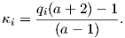

Abramowitz, M. & Stegun, I. A., Eds. (1970). Handbook of Mathematical Functions, volume 55 of Applied Mathematics Series. Washington, DC.: National Bureau of Standards.
Aitken, M., Alcock, P., G.D., B., & Shaw, C. (1981). Archaeomagnetic determination of the past geomagnetic intensity using ancient ceramics: allowance for anisotropy. Archaeometry, 23, 53–64.
Aitken, M. J., Allsop, A. L., Bussell, G. D., & Winter, M. B. (1988). Determination of the intensity of the Earth’s magnetic field during archeological times: reliability of the Thellier technique. Rev. Geophys., 26, 3–12.
Alvarez, W., Arthur, M. A., Fischer, A. G., Lowrie, W., Napoleone, G., Premoli-Silva, I., & Roggenthen, W. M. (1977). Type section for the Late Cretaceous-Paleocene reversal time scale. Geol. Soc. Amer. Bull., 88, 383–389.
Anonymous (1979). Magnetostratigraphic polarity units- a supplementary chapter of the ISSC International stratigraphic guide. Geology, 7, 578–583.
Anson, G. L. & Kodama, K. P. (1987). Compaction-induced inclination shallowing of the post-depositional remanent magnetization in a synthetic sediment. Geophys. J. R. astr. Soc., 88, 673–692.
Aurnou, J., Andreadis, S., Zhu, L., & Olson, P. (2003). Experiments on convection in Earth’s core tangent cylinder. Earth Planet. Sci. Lett., 212(1-2), 119–134.
Backus, G., Parker, R. L., & Constable, C. (1996). Foundations of geomagnetism. Cambridge: Cambridge University Press.
Balsley, J. R. & Buddington, A. F. (1960). Magnetic susceptibility anisotropy and fabric of some Adirondack granites and orthogneisses. Amer. Jour. Sci., 258A, 6–20.
Banerjee, S. K. (1971). New grain size limits for paleomagnetic stability in hematite. Nature Phys. Sci., 232, 15–16.
Banerjee, S. K. (1991). Magnetic properties of Fe-Ti oxides. In D. H. Lindsley (Ed.), Oxide Minerals: Petrologic and Magnetic Significance, volume 25 of Reviews in Mineralogy (pp. 107128). Washington: Mineralogical Society of America.
Banerjee, S. K., King, J., & Marvin, J. (1981). A rapid method for magnetic granulometry with applications to environmental studies. Geophys. Res. Lett., 8, 333–336.
Behrensmeyer, A. K. & Tauxe, L. (1982). Isochronous fluvial systems in Miocene deposits of Northern Pakistan. Sedimentology, 29, 331–352.
Ben-Yosef, E., Ron, H., Tauxe, L., Agnon, A., Genevey, A., Levy, T., Avner, U., & Najjar, M. (2008a). Application of copper slag in geomagnetic archaeointensity research. J. Geophys. Res., 113, doi:10.1029/2007JB005235.
Ben-Yosef, E., Tauxe, L., Ron, H., Agnon, A., Avner, U., Najjar, M., & Levy, T. (2008b). A new approach for geomagnetic archeointensity research: insights on ancient matellurgy in the Southern Levant. J. Archaelogical Science, 35, 2863–2879.
Berggren, W., Kent, D., Swisher III, C., & Aubry, M.-P. (1995). A Revised Cenozoic Geochronology and Chronostratigraphy. In W. Berggren, D. Kent, M.-P. Aubry, & J. Hardenbol (Eds.), Geochronology Time Scales and global Stratigraphic Correlation (pp. 129–212). Tulsa, Oklahoma: SEPM.
Besse, J. & Courtillot, V. (2002). Apparent and true polar wander and the geometry of the geomagnetic field over the last 200 Myr. J. Geophys. Res, 107, doi:10.1029/2000JB000050.
Bingham, C. (1974). An antipodally symmetric distribution on the sphere. Ann. Statist., 2, 1201–1225.
Bitter, F. (1931). On inhomogeneities in the magnetization of ferromagnetic materials. Phys. Rev., 38, 1903–1905.
Bol’shakov, A. & Shcherbakova, V. (1979). A thermomagnetic criterion for determining the domain structure of ferrimagnetics. Izv. Phys. Solid Earth, 15, 111–117.
Bonhommet, N. & Zähringer, J. (1969). Paleomagnetism and potassium argon age determinations of the Laschamp geomagnetic polarity event. Earth Planet. Sci. Lett., 6, 43–46.
Borradaile, G. J. (1988). Magnetic susceptibility, petrofabrics and strain. Tectonophysics, 156, 1–20.
Borradaile, G. J. (2003). Statistics of Earth Science Data: Their Distribution in Time, Space, and Orientation. Berlin: Springer.
Brunhes, B. (1906). Recherches sur le direction d’aimantation des roches volcaniques. J. Phys., 5, 705–724.
Bullard, E. C., Everett, J. E., & Smith, A. G. (1965). A symposium on continential drift - IV. the fit of the continents around the Atlantic. Phil. Trans. Roy. Soc., 258, 41–51.
Busse, F. (1983). A model of mean zonal flows in the major planets. Geophys. Astrophys. Fluid Dyn., 23, 153–174.
Butler, R. F. (1992a). Comment on “High-latitude paleomagnetic poles from Middle Jurassic plutons and Moat volcanics in New England and the controversy regarding Jurassic APW for North America” by M. Van Fossen and D.V. Kent. J. Geophys. Res., 97, 1801–1802.
Butler, R. F. (1992b). Paleomagnetism: Magnetic Domains to Geologic Terranes. Blackwell Scientific Publications.
Butler, R. F. & Banerjee, S. K. (1975). Theoretical single domain grain-size range in magnetite and titanomagnetite. J. Geophys. Res., 80, 4049–4058.
Cande, S. C. & Kent, D. V. (1992). A new geomagnetic polarity time scale for the late Cretaceous and Cenozoic. J. Geophys. Res., 97, 13917–13951.
Cande, S. C. & Kent, D. V. (1995). Revised calibration of the geomagnetic polarity timescale for the late Cretaceous and Cenozoic. J. Geophys. Res, 100, 6093–6095.
Carter-Stiglitz, B., Solheid, P., Egli, R., & Chen, A. (2006). Tiva Canyon Tuff (II): Near single domain standard reference material available. The IRM Quarterly, 16(1), 1.
Cassata, W., Singer, B., & Cassidy, J. (2008). Laschamp and Mono Lake geomagnetic excursions recorded in New Zealand. Earth Planet. Sci. Lett., 268, 76–88.
Cassidy, J. (2006). Geomagnetic excursion captured by multiple volcanoes in a monogenetic field. Geophys. Res. Lett., 33, L1310, doi:10.1029/2006GL027284.
Channell, J. E. J., Lowrie, W., Pialli, P., & Venturi, F. (1984). Jurassic magnetostratigraphy from Umbrian (Italian) land sections. Earth Planet. Sci. Lett., 68, 309–325.
Channell, J. E. T. (1992). Paleomagnetic data from Umbria (Italy): implications for the rotation of Adria and Mesozoic apparent polar wander paths. Tectonophysics, 216, 365–378.
Channell, J. E. T. (2006). Late Brunhes polarity excursions (Mono Lake, Laschamp, Iceland Basin and Pringle Falls) recorded at ODP Site 919 (Irminger Basin). Earth Planet. Sci. Lett., 244, 378–393.
Channell, J. E. T., Erba, E., Nakanishi, M., & Tamaki, K. (1995). Late Jurassic-Early Cretaceous time scales and oceanic magnetic anomaly block models. In W. Berggren, D. Kent, M. Aubry, & J. Hardenbol (Eds.), Geochronology, Time Scales and Stratigraphic Correlation, volume 54 (pp. 51–64). SEPM Spec. Pub.
Cisowski, S. (1981). Interacting vs. non-interacting single domain behavior in natural and synthetic samples. Phys. Earth Planet. Inter., 26, 56–62.
Clement, B. M. (1991). Geographical distribution of transitional VGPs: evidence for non-zonal equatorial symmetry during the Matuyama-Brunhes geomagnetic reversal. Earth Planet. Sci. Lett., 104, 48–58.
Clement, B. M. (2004). Dependence of the duration of geomagnetic polarity reversals on site latitude. Nature, 428(6983), 637–640.
Clement, B. M. & Kent, D. V. (1984). A detailed record of the Lower Jaramillo polarity transition from a southern hemisphere, deep-sea sediment core. Jour. Geophys. Res., 89, 1049–1058.
Coe, R. S. (1967). The determination of paleo-intensities of the Earth’s magnetic field with emphasis on mechanisms which could cause non-ideal behavior in Thellier’s method. J. Geomag. Geoelectr., 19, 157–178.
Coe, R. S., Grommé, S., & Mankinen, E. A. (1978). Geomagnetic paleointensities from radiocarbon-dated lava flows on Hawaii and the question of the Pacific nondipole low. J. Geophys. Res., 83, 1740–1756.
Coffey, W., Kalmykov, Y., & Waldron, J. (1996). The Langevin Equation with Applications in Physics, Chemistry and Electrical Engineering, volume 11 of World Scientific Series in Contemporary Chemcical Physics. Singapore: World Scientific.
Collinson, D. W. (1965). DRM in sediments. J. Geophys. Res., 70, 4663–4668.
Collinson, D. W. (1983). Methods in Rock Magnetism and Paleomagnetism. London: Chapman and Hall.
Constable, C. & Parker, R. L. (1988). Statistics of the geomagnetic secular variation for the past 5 m.y. J. Geophys. Res., 93, 11569–11581.
Constable, C. & Tauxe, L. (1990). The bootstrap for magnetic susceptibility tensors. J. Geophys. Res., 95, 8383–8395.
Constable, C. G. (2003). Geomagnetic reversals: rates, timescales, preferred paths, statistical models and simulations. In C. Jones, A. Soward, & K. Zhang (Eds.), Earth’s Core and Lower Mantle, The Fluid Mechanics of Astrophysics and Geophysics. Taylor and Francis, London.
Constable, C. G., Johnson, C. L., & Lund, S. P. (2000). Global geomagnetic field models for the past 3000 years: transient or permanent flux lobes? Phil Trans Roy Soc London, Series A, 358(1768), 991–1008.
Cook, A. (2001). Edmond Halley and the magnetic field of the Earth. Notes Rec. R. Soc. Lond., 55, 473–490.
Cox, A. (1969). Research note: Confidence limits for the precision parameter, K. Geophys. J. Roy. Astron. Soc, 17, 545–549.
Cox, A. & Doell, R. (1960). Review of Paleomagnetism. Geol. Soc. Amer. Bull., 71, 645–768.
Cox, A., Doell, R. R., & Dalrymple, G. B. (1964). Reversals of the Earth’s magnetic field. Science, 144, 1537–1543.
Cox, A. V., Doell, R. R., & Dalrymple, G. B. (1963). Geomagnetic polarity epochs and Pleistocene geochronometry. Nature, 198, 1049–1051.
Creer, K., Irving, E., & Nairn, A. (1959). Paleomagnetism of the Great Whin Sill. Geophys. J. Int., 2, 306–323.
Creer, K. M. (1983). Computer synthesis of geomagnetic paleosecular variations. Nature, 304, 695–699.
Cronin, M., Tauxe, L., Constable, C., Selkin, P., & Pick, T. (2001). Noise in the quiet zone. Earth Planet. Sci. Lett., 190, 13–30.
Cullity, B. (1972). Introduction to Magnetic Materials. Addison-Wesley Publishing Company.
Dankers, P. H. M. & Zijderveld, J. D. A. (1981). Alternating field demagnetization of rocks and the problem of gyromagnetic remanence. Earth Planet. Sci. Lett., 53, 89–92.
David, P. (1904). Sur la stabilité de la direction d’aimantation dans quelques roches volcaniques. C. R. Acad Sci. Paris, 138, 41–42.
Day, R., Fuller, M. D., & Schmidt, V. A. (1977). Hysteresis properties of titanomagnetites: grain size and composition dependence. Phys. Earth Planet. Inter., 13, 260–266.
Deamer, G. A. & Kodama, K. P. (1990). Compaction-induced inclination shallowing in synthetic and natural clay-rich sediments. Jour. Geophys. Res., 95, 4511–4529.
Dekkers, M. & Böhnel, H. (2006). Reliable absolute paleointensities independent of magnetic domain state. Earth Planet. Sci. Lett., 248, 508–517.
Dekkers, M. J. (1988). Magnetic properties of natural pyrrhotite Part I: behaviour of initial susceptibility and saturation magnetization related rock magnetic parameters in a grain-size dependent framework. Phys. Earth Planet. Inter., 52, 376–393.
Dekkers, M. J. (1989a). Magnetic properties of natural goethite I. Grain size dependence of some low and high field related rock magnetic parameters measured at room temperature. Geophys. Jour., 97, 323–340.
Dekkers, M. J. (1989b). Magnetic properties of natural pyrrhotite. II. High and low temperature behaviors of Jrs and TRM as a function of grain size. Phys. Earth Planet. Inter., 57, 266–283.
Dekkers, M. J., Mattei, J. L., Fillion, G., & Rochette, P. (1989). Grain-size dependence of the magnetic behavior of pyrrhotite during its low temperature transition at 34 K. Geophys. Res. Lett., 16, 855–858.
DeMets, C., Gordon, R. G., Argus, D. F., & Stein, S. (1994). Effect of recent revisions to the geomagnetic reversal time scale on estimates of current plate motions. Geophys. Res. Lett., 21, 2191–2194.
Doell, R. & Dalrymple, G. (1966). Geomagnetic polarity epochs: A new polarity event and the age of the Brunhes-Matuyama boundary. Science, 152, 1060–1061.
Dunlop, D. (2002b). Theory and application of the Day plot (Mrs∕Ms versus Hcr∕Hc) 2. Application to data for rocks, sediments, and soils. J. Geophys. Res, 107, doi:10.1029/2001JB000487.
Dunlop, D. & Argyle, K. (1997). Thermoremanence, anhysteretic remanence and susceptibility of submicron magnetites: Nonlinear field dependence and variation with grain size. J. Geophys. Res, 102, 20199–20210.
Dunlop, D. & Özdemir, O. (1997). Rock Magnetism: Fundamentals and Frontiers. Cambridge University Press.
Dunlop, D. & Özdemir, O. (2001). Beyond Néel’s theories: thermal demagnetization of narrow-band partial thermoremanent magnetization. Phys. Earth Planet. Int., 126, 43–57.
Dunlop, D. J. (2002a). Theory and application of the Day plot (Mrs/Ms versus Hcr/Hc) 1. Theoretical curves and tests using titanomagnetite data. J. Geophys. Res., 107, doi:10.1029/2001JB000486.
Dunlop, D. J. & Carter-Stiglitz, B. (2006). Day plots of mixtures of superparamagnetic, single-domain, pseudosingle-domain, and multidomain magnetites. J. Geophy. Res., 111.
Dunlop, D. J. & Xu, S. (1994). Theory of partial thermoremanent magnetization in multidomain grains, 1 Repeated identical barriers to wall motion (single microcoercivity). Jour. Geophys. Res., 99, 9005–9023.
Dupont-Nivet, G., Guo, Z., Butler, R., & Jia, C. (2002). Discordant paleomagnetic direction in Miocene rocks from the central Tarim Basin: evidence for local deformation and inclination shallowing. Earth Planet. Sci. Lett., 199, 473–482.
Efron, B. & Tibshirani, R. (1993). An Introduction to the Bootstrap, volume 57 of Monographs on Statistics and Applied Probability. New York: Chapman and Hall.
Egli, R. (2003). Analysis of the field dependence of remanent magnetization curves. J. Geophy. Res., 108(B2).
Elsasser, W. (1958). The Earth as a dynamo. Scientific American, 198, 44–48.
Evans, M. & Heller, F. (2003). Environmental Magnetism: Principles and Applications of Enviromagnetics. Academic Press.
Evans, M. E. & McElhinny, M. W. (1969). An investigation of the origin of stable remanence in magnetite-bearing igneous rocks. J. Geomag. Geoelectr., 21, 757–773.
Fabian, K. (2003). Some additional parameters to estimate domain state from isothermal magnetization measurements. Earth Planet. Sci. Lett., 213(3-4), 337–345.
Fabian, K., Andreas, K., Williams, W., Heider, F., Leibl, T., & Huber, A. (1996). Three-dimensional micromagnetic calculations for magnetite using FFT. Geophys. J. Int., 124, 89–104.
Feinberg, J., Scott, G., Renne, P., & Wenk, H.-R. (2005). Exsolved magnetite inclusions in silicates: Features determining their remanence behavior. Geology, 33, 513–516: doi: 10.1130/G21290.1.
Fisher, N. I., Lewis, T., & Embleton, B. J. J. (1987). Statistical Analysis of Spherical Data. Cambridge: Cambridge University Press.
Fisher, R. A. (1953). Dispersion on a sphere. Proc. Roy. Soc. London, Ser. A, 217, 295–305.
Fletcher, E. & O’Reilly, O. (1974). Contribution of Fe2+ ions to the magnetocrystalline anisotropy constant K1 of Fe(3-x)TixO4(0 < x < 0.1). J. Phys. C: Sol. State Phys., 7, 171–178.
Flinn, D. (1962). On folding during three-dimensional progressive deformation. Geol. Soc. London Quart. Jour., 118, 385–433.
Folgheraiter, G. (1899). Sur les variations séculaires de l’inclinaison magnétique dans l’antiquité. Jour. de Phys., 5, 660–667.
Forsythe, R. & Chisholm, L. (1994). Paleomagnetic and structural contraints on rotations in the North Chilean Coast Ranges. J. South Amer. Earth Sci., 7, 279–294.
Frost, B. & Lindsley, D. (1991). The occurrence of Fe-Ti oxides in igneous rocks. In D. Lindsley (Ed.), Oxide Minerals: Petrologic and Magnetic Significance, volume 25 of Reviews in Mineralogy (pp. 433–486). Mineralogical Society of America.
Galbrun, B. (1985). Magnetostratigraphy of the Berriasian stratotype section (Berrias, France). Earth Planet. Sci. Lett., 74, 130–136.
Gapeyev, A. & Tsel’movich, V. (1988). Stages of oxidation of titanomagnetite grains in igneous rocks (in Russian). Viniti N. Moscow, 1331-B89, 3–8.
Gee, J., Staudigel, H., Tauxe, L., Pick, T., & Gallet, Y. (1993). Magnetization of the La Palma Seamount Series: Implications for Seamount Paleopoles. J. Geophys. Res., 98, 11743–11768.
Gee, J. S. & Kent, D. V. (2007). Source of oceanic magnetic anomalies and the geomagetic polarity timescale. In M. Kono (Ed.), Geomagnetism, volume 5 of Treatise on Geophysics (pp. 455–507). Elsevier.
Gee, J. S., Tauxe, L., & Constable, C. (2008). AMSSpin - A LabVIEW program for measuring the anisotropy of magnetic susceptibility (AMS) with the Kappabridge KLY-4S. Geochem. Geophys. Geosyst., 9, Q08Y02,doi:10.1029/2008GC001976.
Genevey, A. & Gallet, Y. (2003). Eight thousand years of geomagnetic field intensity variations in the eastern Mediterranean. J. Geophys. Res, 108, doi:10.1029/2001JB001612.
Genevey, A., Gallet, Y., Constable, C. G., Korte, M., & Hulot, G. (2008). ArcheoInt: An upgraded compilation of geomagnetic field intensity data for the past ten millennia and its application to the recovery of the past dipole moment. Geochem. Geophys. Geosyst., 9, doi:10.1029/2007GC001881.
Gibbs, R. (1985). Estuarine flocs: Their size, settling velocity and density. J. Geophys. Res., 90, 3249–3251.
Gilder, S., Chen, Y., & Sen, S. (2001). Oligo-Miocene magnetostratigarphy and rock magnetism of the Xishuigou section, Subei (Gansu Province, western China) and implications for shallow inclinations in central Asia. J. Geophys. Res, 106, 30,505–30,521.
Glatzmaier, G. & Roberts, P. (1995). A three-dimensional self-consistent computer simulation of a geomagnetic field reversal. Nature, 377, 203–209.
Glatzmaier, G. & Roberts, P. (1996). Rotation and magnetism of Earth’s inner core. Science, 274, 1887–1891.
Glatzmaier, G. A., Coe, R. S., Hongre, L., & Roberts, P. H. (1999). The role of the Earth’s mantle in controlling the frequency of geomagnetic reversals. Nature, 401(6756), 885–890.
Glen, W. (1982). The Road to Jaramillo. Stanford: Stanford University Press.
Gordon, R. G., Cox, A., & Hare, S. O. (1984). Paleomagnetic euler poles and the apparent polar wander and absolute motion of North America since the Carboniferous. Tectonics, 3, 499–537.
Gradstein, F., Agterberg, F., Ogg, J., Hardenbol, J., Van Veen, P., Thierry, J., & Huang, Z. (1995). A Triassic, Jurassic and Cretaceous time scale. In W. Berggren, D. Kent, M.-P. Aubry, & J. Hardenbol (Eds.), Geochronology Time Scales and global Stratigraphic Correlation (pp. 95–126). Tulsa, Oklahoma: SEPM.
Gradstein, F., Ogg, J., & Smith, A. (2004). Geologic Time Scale 2004. Cambridge: Cambridge University Press.
Graham, J. W. (1949). The stability and significance of magnetism in sedimentary rocks. J. Geophys. Res., 54, 131–167.
Gregor, C., Mertzman, S., Nairn, A., & Negendank, J. (1974). The paleomagnetism of some Mesozoic and Cenozoic volcanic rocks from the Lebanon. Tectonophysics, 21, 375–395.
Grommé, C. S., Wright, T. L., & Peak, D. L. (1969). Magnetic properties and oxidation of iron-titanium oxide minerals in Alae and Makaopulhi Lava Lakes, Hawaii. J. Geophys. Res., 74, 5277–5293.
Gubbins, D. & Herrero-Bervera, E. (2007). Encyclopedia of Gemagnetism and Paleomagnetism. Encyclopedia of Earth Sciences. Springer.
Guyodo, Y. & Valet, J. P. (1999). Global changes in intensity of the Earth’s magnetic field during the past 800 kyr. Nature, 399(6733), 249–252.
Halgedahl, S., Day, R., & Fuller, M. (1980). The effect of cooling rate on the intensity of weak-field TRM in single-domain magnetite. J. Geophys. Res, 85, 3690–3698.
Halgedahl, S. & Fuller, M. (1983). The dependence of magnetic domain structure upon magnetization state with emphasis upon nucleation as a mechanism for pseudo-single domain behavior. J. Geophys. Res., 88, 6505–6522.
Hargraves, R. B. (1991). Distribution anisotropy: the cause of AMS in igneous rocks? Geophys. Res. Lett., 18, 2193–2196.
Hargraves, R. B. & Onstott, T. C. (1980). Paleomagnetic results from some southern African kimberlites and their tectonic significance. J. Geophys. Res., 85, 3587–3596.
Harrison, C. G. A. (1966). The paleomagnetism of deep sea sediments. J. Geophys. Res., 71, 3033–3043.
Harrison, R. & Feinberg, J. (2008). FORCinel: An improved algorithm for calculating first-order reversal curve (FORC) distributions using locally-weighted regression smoothing. Geochem. Geophys. Geosyst., doi:10.1029/2008GC001987.
Hatakeyama, T. & Kono, M. (2002). Geomagnetic field model for the last 5 My: time-averaged field and secular variation. Phys. Earth Planet. Int., 133, 181–215.
Hays, J. D., Imbrie, J., & Shackleton, N. J. (1976). Variations in the Earth’s orbit: pacemaker of the ice ages. Science, 194, 1121–1132.
He, H., Pan, Y. X., Tauxe, L., & Qin, H. (2008). Toward age determination of the Barremian-Aptian boundary M0r of the Early Cretaceous. Phys. Earth Planet. Int., 169, 41–48.
Heider, F. & Hoffmann, V. (1992). Magneto-optical Kerr effect on magnetite crystals with externally applied magnetic fields. Earth Planet. Sci. Lett., 108, 131138.
Heider, F., Zitzelsberger, A., & Fabian, K. (1996). Magnetic susceptibility and remanent coercive force in grown magnetite crystals from 0.1 μm to 6mm. Phys. Earth Planet. Inter., 93, 239–256.
Heirtzler, J. R., Dickson, G. O., Herron, E. M., Pitman, W. C. I., & LePichon, X. (1968). Marine magnetic anomalies geomagnetic field reversals, and motions of the ocean floor and continents. J. Geophys. Res., 73, 2119–2136.
Helsley, C. & Steiner, M. (1969). Evidence for long intervals of normal polarity during the Cretaceous period. Earth Planet. Sci. Lett., 5, 325–332.
Hext, G. R. (1963). The estimation of second-order tensors, with related tests and designs. Biometrika, 50, 353–357.
Hilgen, F. J. (1991). Astronomical calibration of Gauss to Matuyama sapropels in the Mediterranean and implication for the Geomagnetic Polarity Time Scale. Earth Planet. Sci. Lett., 104, 226–244.
Hill, M., Shaw, J., & Herrero-Bervera, E. (2005). Paleointensity record through the Lower Mammoth reversal from the Waianae volcano, Hawaii. Earth Planet. Sci. Lett., 230, 255–272.
Hoffman, K. A. & Biggin, A. J. (2005). A rapid multi-sample approach to the determination of absolute paleointensity. J. Geophys. Res., 110, B12108, doi:10.1029/2005JB003646.
Hoffman, K. A., Constantine, V. L., & Morse, D. L. (1989). Determinaton of absolute palaeointensity using a multi-specimen procedure. Nature, 339, 295–297.
Hoffmann, V., Knab, M., & Appel, E. (1999). Magnetic susceptibility mapping of roadside pollution. J. Geochem. Explor., 66, 313–326.
Hospers, J. (1955). Rock magnetism and polar wandering. J. Geol., 63, 59–74.
Hughen, K., Lehman, S., Southon, J., Overpeck, J., Marchal, O., Herring, C., & Turnbull, J. (2004). C-14 activity and global carbon cycle changes over the past 50,000 years. Science, 303(5655), 202–207.
Hulot, G., Eymin, C., Langlais, B., Mandea, M., & Olsen, N. (2002). Small-scale structure of the geodynamo inferred from Oersted and Magsat satellite data. Nature, 416, 620–623.
Hunt, C. P., Moskowitz, B. M., & Banerjee, S. K. (1995). Rock Physics and Phase Relations, A Handbook of Physical Constants. (pp. 189–204).
Irving, E. (1958). Paleogeographic reconstruction from paleomagnetism. Geophys. J. Roy. astr. Soc., 1, 224–237.
Irving, E. (1979). Paleopoles and paleolatitudes of North America and speculations about displaced terrains. Can. J. Earth Sci., 16, 669–694.
Irving, E. & Ward, M. (1963). A statistical model of the geomagnetic field. Pure and Applied Geophysics, 57, 47–52.
Irwin, J. (1987). Some paleomagnetic constraints on the tectonic evolution of the coastal cordillera of central Chile. J. Geophys. Res., 92, 3603–3614.
Jackson, A., Jonkers, A. R. T., & Walker, M. R. (2000). Four centuries of geomagnetic secular variation from historical records. Phil. Trans. Roy. Soc. London, Series A, 358(1768), 957–990.
Jackson, M., Carter-Stiglitz, B., Egli, R., & Solheid, P. (2006). Characterizing the superparamagnetic grain distribution f(V, Hk) by thermal fluctuation tomography. J. Geophys. Res., 111, B12S07, doi:10.1029/2006JB004514.
Jackson, M., Worm, H. U., & Banerjee, S. K. (1990). Fourier analysis of digital hysteresis data: rock magnetic applications. Phys. Earth Planet. Inter., 65, 78–87.
Jackson, M. J., Banerjee, S. K., Marvin, J. A., Lu, R., & Gruber, W. (1991). Detrital remanence, inclination errors and anhysteretic remanence anisotropy: quantitative model and experimental results. Geophys. J. Int., 104, 95–103.
Jelinek, V. (1978). Statistical processing of anisotropy of magnetic susceptibility measured on groups of specimens. Studia Geophys. et Geol., 22, 50–62.
Jelinek, V. (1981). Characterization to the magnetic fabric of rocks. Tectonophysics, 79, T63–T67.
Jiles, D. (1991). Introduction to Magnetism and Magnetic Materials. Chapman and Hall/CRC.
Joffe, I. & Heuberger, R. (1974). Hysteresis properties of distributions of cubic single-domain ferromagnetic particles. Phil. Mag., 314, 1051–1059.
Johnson, C. L., Constable, C. G., Tauxe, L., Barendregt, R., Brown, L., Coe, R., Layer, P., Mejia, V., Opdyke, N., Singer, B., Staudigel, H., & Stone, D. (2008). Recent investigations of the 0-5 Ma geomagnetic field recorded in lava flows. Geochem. Geophys. Geosyst., 9, Q04032, doi:10.1029/2007GC001696.
Johnson, E. A., Murphy, T., & Torreson, O. W. (1948). Pre-history of the Earth’s magnetic field. Terr. Magn. atmos. Elect., 53, 349–372.
Johnson, R., van der Voo, R., & Lowrie, W. (1984). Paleomagnetism and late diagenesis of Jurassic carbonates from the Jura Mountains, Switzerland and France. Geol. Soc. Amer. Bull., 95, 478–488.
Jupp, P. & Kent, J. (1987). Fitting smooth paths to spherical data. Appl. Statist., 36, 34–46.
Katari, K. & Bloxham, J. (2001). Effects of sediment aggregate size on DRM intensity: a new theory. Earth Planet. Sci. Lett., 186(1), 113–122.
Katari, K. & Tauxe, L. (2000). Effects of surface chemistry and flocculation on the intensity of magnetization in redeposited sediments. Earth Planet. Sci. Lett., 181, 489–496.
Kent, D., Hemming, S., & Turrin, B. (2002). Laschamp excursion at Mono Lake? Earth Planet. Sci. Lett., 197, 151–164.
Kent, D. & Smethurst, M. (1998). Shallow bias of paleomagnetic inclinations in the Paleozoic and Precambrian. Earth Planet. Sci. Lett., 160, 391–402.
Kent, D. V. & Olsen, P. (1999). Astronomically tuned geomagnetic polarity time scale for the Late Triassic. J. Geophys. Res., 104, 12831–12841.
Kent, D. V., Olsen, P. E., & Witte, W. K. (1995). Late Triassic-earliest Jurassic geomagnetic polarity sequence and paleolatitudes from drill cores in the Newark rift basin, eastern North America. J. Geophys. Res., 100, 14965–14998.
Kent, J. T. (1982). The Fisher-Bingham distribution on the sphere. J. R. Statist. Soc. B., 44, 71–80.
King, J., Banerjee, S. K., Marvin, J., & Ozdemir, O. (1982). A comparison of different magnetic methods for determining the relative grain size of magnetite in natural materials: some results from lake sediments. Earth Planet. Sci. Lett., 59, 404–419.
King, J. W., Banerjee, S. K., & Marvin, J. (1983). A new rock magnetic approach to selecting sediments for geomagnetic paleointensity studies: application to paleointensity for the last 4000 years. J. Geophys. Res., 88, 5911–5921.
King, R. F. (1955). The remanent magnetism of artificially deposited sediments. Mon. Nat. Roy. astr. Soc., Geophys. Suppl., 7, 115–134.
Kirschvink, J. L. (1980). The least-squares line and plane and the analysis of paleomagnetic data. Geophys. J. Roy. Astron. Soc., 62, 699–718.
Kirschvink, J. L., Ripperdan, R., & Evans, D. (1997). Evidence for a large-scale reorganization of early Cambrian continental masses by inertial interchange true polar wander. Science, 277, 541–545.
Kluth, C., Butler, R., Harding, L., Shafiqullah, M., & Damon, P. (1982). Paleomagnetism of Late Jurassic rocks in the Northern Canelo Hills, Southeastern Arizona. J. Geophy. Res., 87, 7079–7086.
Knight, M. D. & Walker, G. P. L. (1988). Magma flow directions in dikes of the Koolau Comples, Oahu, determined from magnetic fabric studies. J. Geophys. Res., 93, 4301–4319.
Königsberger, J. (1938). Natural residual magnetism of eruptive rocks, Pt I, Pt II. Terr. Magn. and Atmos. Electr., 43, 119–127;299–320.
Kono, M. (1974). Intensities of the Earth’s magnetic field about 60 m.y. ago determined from the Deccan Trap basalts, India. J. Geophys. Res., 79, 1135–1141.
Kono, M. (2007a). Geomagnetism in Perspective. In M. Kono (Ed.), Geomagnetism, volume 5 of Treatise on Geophysics (pp. 1–30). Elsevier.
Kono, M. (2007b). Treatise in Geophysics, vol. 5. Elsevier.
Kono, M. & Ueno, N. (1977). Paleointensity determination by a modified Thellier method. Phys. Earth Planet. Inter., 13, 305–314.
Kopp, R. E. & Kirschvink, J. L. (2008). The identification and biogeochemical interpretation of fossil magnetotactic bacteria. Earth-Science Reviews, 86(1-4), 42–61.
Korhonen, K., Donadini, F., Riisager, P., & Pesonen, L. J. (2008). GEOMAGIA50: An archeointensity database with PHP and MySQL. Geochem. Geophys. Geosyst., 9(Q04029), doi:10.1029/2007GC001893.
Korte, M. & Constable, C. (2005). Continuous geomagnetic field models for the past 7 millennia: 2. CALS7K. Geochem., Geophys., Geosyst., 6, Q02H16: DOI 10.1029/2004GC000801.
Korte, M. & Constable, C. G. (2003). Continuous global geomagnetic field models for the past 3000 years. Phys. Earth Planet. Inter., 140, 73–89.
Korte, M. & Constable, C. G. (2008). Spatial and temporal resolution of millennial scale geomagnetic field models. Advances in Space Research, 41(1), 57–69.
Korte, M., Genevey, A., Constable, C., Frank, U., & Schnepp, E. (2005). Continuous geomagnetic field models for the past 7 millennia: 1. A new global data compilation. Geochem., Geophys., Geosyst., 6(Q02H15), Q02H15; DOI 10.1029/2004GC000800.
Kowallis, B., Christiansen, E., Deino, A., Peterson, F., Turner, C., Kunk, M., & Obradovich, J. (1998). The age of the Morrison Formation. Modern Geology, 22, 235–260.
Kruiver, P., Dekkers, M., & Heslop, D. (2001). Quantification of magnetic coercivity components by the analysis of acquisition curves of isothermal remanent magnetisation. Earth Planet. Sci. Lett., 189(3-4), 269–276.
LaBrecque, J. L., Kent, D. V., & Cande, S. C. (1977). Revised magnetic polarity time scale for Late Cretaceous and Cenozoic time. Geology, 5, 330–335.
Laj, C. & Channell, J. E. T. (2007). Geomagnetic Excursions. In M. Kono (Ed.), Geomagnetism, volume 5 of Treatise on Geophysics (pp. 373–407). Elsevier.
Laj, C., Kissel, C., Mazaud, A., Michel, E., Muscheler, R., & Beer, J. (2002). Geomagnetic field intensity, North Atlantic Deep Water circulation and atmospheric Δ14C during the last 50 kyr. Earth Planet. Sci. Lett., 200, 177–190.
Langel, R. (1987). The main geomagnetic field. In J. Jacobs (Ed.), Geomagnetism (pp. 249–512). New York: Academic Press.
Lanos, P., LeGoff, M., Kovacheva, M., & Schnepp, E. (2005). Hierarchical modelling of archaeomagnetic data and curve estimation by moving average technique. Geophys. J. Int., 160, 440–476.
Larson, R. L. & Pitman, W. C. I. (1972). World-wide correlation of Mesozoic magnetic anomalies, and its implications. Geol. Soc. Amer. Bull., 83, 3645–3662.
Laskar, J., Robutel, P., Joutel, F., Gastineau, M., Correia, A., & Levrard, B. (2004). A long-term numerical solution for the insolation quantities of the Earth. Astron. Astrophys., 428(doi: 10.1051/0004-6361), 261–285.
Lawrence, K. P., Tauxe, L., Staudigel, H., Constable, C., Koppers, A., McIntosh, W. C., & Johnson, C. L. (2009). Paleomagnetic field properties at high southern latitude. Geochem. Geophys. Geosyst., 10, doi:10.1029/2008GC002072.
LeGoff, M., Henry, B., & Daly, L. (1992). Practical method for drawing a VGP path. Phys. Earth Planet. Inter., 70, 201–204.
Levi, S. & Banerjee, S. K. (1976). On the possibility of obtaining relative paleointensities from lake sediments. Earth Planet. Sci. Lett., 29, 219–226.
Love, J. & Constable, C. G. (2003). Gaussian statistics for paleomagnetic vectors. Geophys. J. Int., 152, 515–565.
Lowes, F. (1974). Spatial power spectum of the main geomagnetic field and extrapolation to the core. Geophys. J. R. Astron. Soc., 36, 717–730.
Lowrie, W. (1990). Identification of ferromagnetic minerals in a rock by coercivity and unblocking temperature properties. Geophys. Res. Lett., 17, 159–162.
Lowrie, W. & Kent, D. V. (2004). Geomagnetic polarity timescales and reversal frequency regimes. In J. Channell, D. Kent, W. Lowrie, & J. Meert (Eds.), Timescales of the Paleomagnetic Field, volume 145 (pp. 117–129). Washington, D.C.: American Geophysical Union.
Lund, S. P., Liddicoat, J., Lajoie, T. L. K., & Henyey, T. L. (1988). Paleomagnetic evidence for long-term (104 year) memory and periodic behavior in the Earth’s core dynamo process. Geophys. Res. Lett., 15, 1101–1104.
Maher, B. A. & Thompson, R., Eds. (1999). Quaternary Climates, Environments and Magnetism. Cambridge University Press.
Mardia, K. V. & Zemrock, P. J. (1977). Table of maximum likelihood estimates for the Bingham distribution. J. Statist. Comput. Simul., 6, 29–34.
Masarik, J. & Beer, J. (1999). Simulation of particle fluxes and cosmogenic nuclide production in the Earth’s atmosphere. J. Geophys. Res, 104, 12099–12110.
Mason, R. & Raff, A. (1961). Magnetic survey off the west coast of North America, 40 degrees N. latitude to 52 degrees N. latitude. Geol. Soc. Amer. bull., 72, 1267–1270.
Masters, G., Laske, G., Bolton, H., & Dziewonski, A. M. (2000). The Relative Behavior of Shear Velocity, Bulk Sound Speed, and Compressional Velocity in the Mantle: Implications for Chemical and Thermal Structure. In S. Karato, R. Forte, G. Liebermann, G. Masters, & L. Stixrude (Eds.), Earth’s Deep Interior, volume 117 of AGU Monograph. Washington, D.C.: American Geophysical Union.
Matuyama, M. (1929). On the direction of magnetisation of basalt in Japan, Tyosen and Manchuria. Proc. Imp. Acad. Jap., 5, 203–205.
May, S. & Butler, R. (1986). North American Jurassic apparent polar wander: Implications for plate motion, paleogeography and cordilleran tectonics. J. Geophys. Res., 91, 11519–11544.
Mayergoyz, I. (1986). Mathematical models of hysteresis. IEEE Trans. Magn., MAG-22, 603–608.
McCabe, C., Van der Voo, R., Peacor, C. R., Scotese, C. R., & Freeman, R. (1983). Diagenetic magnetite carries ancient yet secondary remanence in some Paleozoic carbonates. Geology, 11, 221–223.
McDougall, I. & Tarling, D. (1963). Dating reversals of the Earth’s magnetic fields. Nature, 198, 1012–1013.
McElhinnhy, M. & Lock, J. (1996). IAGA paleomagnetic databases with Access. Surv. of Geophys., 17, 575–591.
McElhinny, M. & Lock, J. (1996). IAGA paleomagnetic databases with Access. Surv. in Geophysics, 17, 575–591.
McElhinny, M. & McFadden, P. (2000). Paleomagnetism: Continents and Oceans. Academic Press.
McElhinny, M. W. (1964). Statistical significance of the fold test in paleomagnetism. Geophys. Jour. R. astro. Soc., 8, 338–340.
McElhinny, M. W. & McFadden, P. L. (1997). Palaeosecular variation over the past 5 Myr based on a new generalized database. Geophys. J. Int., 131(2), 240–252.
McFadden, P. L. & Jones, D. L. (1981). The fold test in paleomagnetism. Geophys. J. Roy. astr. Soc., 67, 53–58.
McFadden, P. L. & McElhinny, M. W. (1988). The combined analysis of remagnetization circles and direct observations in paleomagnetism. Earth Planet. Sci. Lett., 87, 161–172.
McFadden, P. L. & Reid, A. B. (1982). Analysis of paleomagnetic inclination data. Geophys. J.R. Astr. Soc., 69, 307–319.
Means, W. (1976). Stress and Strain: Basic Concepts of Continuum Mechanics for Geologists. Springer-Verlag.
Mercanton, P. (1926). Inversion de l’inclinaison magnétique terrestre aux ages géologiques. Terr. Magn. Atmosph. Elec, 31, 187–190.
Merrill, R. T., McElhinny, M. W., & McFadden, P. L. (1996). The Magnetic Field of the Earth: Paleomagnetism, the Core, and the Deep Mantle. Academic Press.
Mochizuki, N., Tsunakawa, H., Shibuya, H., Cassidy, J., & Smith, I. (2006). Paleointensities of the Auckland geomagnetic excursions by the LTD-DHT Shaw method. Phys. Earth Planet. Int., 154, 168–179.
Morel, P. & Irving, E. (1981). Paleomagnetism and the evolution of Pangea. J. Geophys. Res., 86, 1858–1872.
Moskowitz, B., Bazylinski, D., Egli, R., Frankel, R., & Edwards, K. (2008). Magnetic properties of marine magnetotactic bacteria in a seasonally stratified coastal pond (Salt Pond, MA, USA). Geophys. J. Int., 174, 75–92.
Moskowitz, B. M. (1993). High-temperature magnetostriction of magnetite and titanomagnetites. J. Geophy. Res., 98, 359–371.
Moskowitz, B. M. & Banerjee, S. K. (1981). A comparison of the magnetic properties of synthetic titanomaghemites and some ocean basalts. J. Geophys. Res., 86, 11869–11882.
Moskowitz, B. M., Frankel, R. B., & Bazylinski, D. A. (1993). Rock magnetic criteria for the detection of biogenic magnetite. Earth Planet. Sci. Lett., 120(3-4), 283–300.
Muscheler, R., Beer, J., Kubik, P., & Synal, H.-A. (2005). Geomagnetic field intensity during the last 60,000 years based on 10Be and 36Cl from the Summit ice cores and 14C. Quat. Sci. Rev., 24, 1849–1860.
Muttoni, G., Kent, D. V., Garzanti, E., Brack, P., Abrahamsen, N., & Gaetani, M. (2003). Early Permian Pangea ’B’ to Late permian Pangea ’A’. Earth Planet. Sci. Lett., 215, 379–394.
Nagata, T. (1961). Rock Magnetism. Tokyo: Maruzen.
Nagata, T., Arai, Y., & Momose, K. (1963). Secular variation of the geomagnetic total force during the last 5000 years. J. Geophys. Res., 68, 5277–5282.
Needham, J. (1962). Science and Civilisation in China. In Physics and Physical Technology, Part 1 Physics, volume 4. Cambridge: Cambridge University Press.
Néel, L. (1949). Théorie du trainage magnétique des ferromagnétiques en grains fines avec applications aux terres cuites. Ann. Geophys., 5, 99–136.
Néel, L. (1955). Some Theoretical Aspects of Rock-Magnetism. Adv. Phys, 4, 191–243.
Newell, A. J., Dunlop, D. J., & Enkin, R. J. (1990). Temperature dependence of critical sizes, wall widths and moments in two-domain magnetite grains. Phys. Earth Planet. Inter., 65, 165–176.
Nye, J. F. (1957). Physical Properties of Crystals. Oxford: Oxford University Press.
Ogg, J. G., Steiner, M. B., Oloriz, F., & Tavera, J. M. (1984). Jurassic magnetostratigraphy, 1. Kimmeridgian-Tithonian of Sierra Gorda and Cacabuey, southern Spain. Earth Planet Sci. Lett., 71, 147–162.
Onstott, T. C. (1980). Application of the Bingham Distribution Function in paleomagnetic studies. J. Geophys. Res., 85, 1500–1510.
Opdyke, N. D. & Channell, J. E. T. (1996). Magnetic Stratigraphy. Academic Press.
Opdyke, N. D., Glass, B., Hays, J. D., & Foster, J. (1966). Paleomagnetic study of Antarctic deep-sea cores. Science, 154, 349–357.
O’Reilly, W. (1984). Rock and Mineral Magnetism. Blackie.
Oreskes, N. (2001). Plate Tectonics: An insider’s history of the modern theory of the Earth. Boulder, CO: Westview Press.
Owens, W. H. (1974). Mathematical model studies on factors affecting the magnetic anisotropy of deformed rocks. Tectonophysics, 24, 115–131.
Özdemir, O., Dunlop, D. J., & Moskowitz, B. M. (1993). The effect of oxidation on the Verwey transition in magnetite. Geophys. Res. Lett., 20, 1671–1674.
Özdemir, O., Xu, S., & Dunlop, D. J. (1995). Closure domains in magnetite. J. Geophys. Res., 100, 2193–2209.
Paquereau-Lebti, P., Fornari, M., Roperch, P., Thouret, J. C., & Macedo, O. (2008). Paleomagnetism, magnetic fabric, and Ar-40/Ar-39 dating of Pliocene and Quaternary ignimbrites in the Arequipa area, southern Peru. Bull. Volcanol., 70(8), 977–997.
Paterson, G., Tauxe, L., Biggin, A., Shaar, R., & Jonestrask, L. (2014). On improving the selection of Thellier-type paleointensity data. Geochem. Geophys. Geosys., 15, 1–13.
Pauthenet, R. & Bochinrol, L. (1951). Aimantation spontanée des ferrites. J. Physique Radium, 12, 249–251.
Perrin, M. & Schnepp, E. (2004). IAGA paleointensity database: distribution and quality of the data set. Phys. Earth Planet. Int., 147(2-3), 255–267.
Petrovsky, E., Kapicka, A., Jordanova, N., Knab, M., & Hoffmann, V. (2000). Low-field magnetic susceptibility: a proxy method of estimating increased pollution of different environmental systems. Environmental Geology, 39, doi:10.1007/s002540050010, 312–318.
Pick, T. & Tauxe, L. (1993). Geomagnetic paleointensities during the Cretaceous normal superchron measured using submarine basaltic glass. Nature, 366, 238–242.
Pick, T. & Tauxe, L. (1994). Characteristics of magnetite in submarine basaltic glass. Geophys. J. Int., 119, 116–128.
Pitman, W. C. I. & Heirtzler, J. R. (1966). Magnetic anomalies over the Pacific Antarctic ridge. Science, 154, 1164–1171.
Plenier, G., Camps, P., Henry, B., & Nicolaysen, K. (2002). Palaeomagnetic study of Oligocene (24-30 Ma) lava flows from the Kerguelen Archipelago (southern Indian Ocean): directional analysis and magnetostratigraphy. Phys. Earth Planet. Int., 133, 127–146.
Plenier, G., Valet, J. P., Guérin, G., Lefèvre, J.-C., LeGoff, M., & Carter-Stiglitz, B. (2007). Origin and age of the directions recorded during the Laschamp even in the Chaîne des Puys (France). Earth Planet. Sci. Lett., 259, 424–431.
Pokorny, J., Suza, P., & Hrouda, F. (2004). Anisotropy of magnetic susceptibility of rocks measured in variable weak magnetic fields using the KLY-4S Kappabridge. In M.-H. e. al. (Ed.), Magnetic Fabric: Methods and Applications, volume 238 (pp. 69–76). Geol. Soc. Spec. Publ.
Potter, D. & Stephenson, A. (2005). New observations and theory of single-domain magnetic moments. J. Physics: Conf. Series, 17, 168–173.
Prévot, M. & Camps, P. (1993). Absence of preferred longitude sectors for poles from volcanic records of geomagnetic reversals. Nature, 366, 53–57.
Prévot, M., Derder, M. E. M., McWilliams, M., & Thompson, J. (1990). Intensity of the Earth’s magnetic field: evidence for a Mesozoic dipole low. Earth Planet. Sci. Lett., 97, 129–139.
Pullaiah, G., Irving, E., Buchan, K., & Dunlop, D. (1975). Magnetization Changes Caused by Burial and Uplift. Earth Planet. Sci. Lett., 28, 133–143.
Ramsay, J. G. (1967). Folding and fracturing of rocks. McGraw Hill.
Randall, D. & Taylor, G. (1996). Major crustal rotations in the Andean margin: Paleomagnetic results from the Coastal Cordillera of northern Chile. J. Geophys. Res., 101, 15783–15798.
Reeves, E. (1918). Halley’s magnetic variation charts. The Geographical Journal, 51, 237–240.
Reynolds, R., Hudson, M., Fishman, N., & Campbell, J. (1985). Paleomagnetic and petrologic evidence bearing on the age and origin of uranium deposits in the Permian Cutler Formation, Lisbon Valley, Utah. Bull. Geol. Soc. Amer., 96, 719–730.
Riisager, P., Knight, K., Baker, J., Peate, I., Al-Kadasi, M., Al-Subbary, A., & Renne, P. (2005). Paleomagnetism and 40Ar/39Ar geochronology of Yemeni Oligocene volcanics: Implications for timing and duration of Afro-Arabian traps and geometry of the Oligocene paleomagnetic field. Earth Planet. Sci. Lett., 237, 647–672.
Riisager, P. & Riisager, J. (2001). Detecting multidomain magnetic grains in Thellier palaeointensity experiments. Phys. Earth Planet. Inter., 125(1-4), 111–117.
Riisager, P., Riisager, J., Abrahamsen, N., & Waagstein, R. (2002). Thellier palaeointensity experiments on Faroes flood basalts: technical aspects and geomagnetic implications. Phys. Earth Planet. Inter., 131(2), 91–100.
Roberts, A. P. (1995). Magnetic properties of sedimentary greigite (Fe3S4). Earth Planet. Sci. Lett., 134, 227–236.
Roberts, P. & Stix, M. (1972). α- effect dynamos, by the Bullard-Gellman formalism. Astron. Astrophys., 18, 453–466.
Robertson, D. J. & France, D. E. (1994). Discrimination of remanence-carrying minerals in mixtures, using isothermal remanent magnetisation acquisition curves. Phys. Earth Planet. Int., 82(3-4), 223–234.
Robinson, P., Harrison, R., McEnroe, S., & Hargraves, R. (2004). Nature and origin of lamellar magnetism in the hematite-ilmenite series. Amer. Min., 89, 725–747.
Robinson, P., Harrison, R., McEnroe, S., & Hargraves, R. B. (2002). lamellar magnetism in the hematite-ilmenite series as an explanation for strong remanent magnetization. Nature, 418, 517–520.
Rochette, P., Fillion, G., Mattei, J. L., & Dekkers, M. J. (1990). Magnetic transition at 30-34 Kelvin in pyrrhotite: insight into a widespread occurrence of this mineral in rocks. Earth Planet. Sci. Lett., 98, 319–328.
Rosenbaum, G., Lister, G., & Duboz, C. (2002). Relative motions of Africa, Iberia and Europe during Alpine orogeny. Tectonophysics, 359, 117–129.
Rosenbaum, J., Reynolds, R., Adam, D., Drexler, J., Sarna-Wojcicki, A., & Whitney, G. (1996). A middle Pleistocene climate record from Buck Lake, Cascade Range, southern Oregon–evidence from sediment magnetism, trace-element geochemistry, and pollen. Geol. Soc. Amer. Bull., 108, 1328–1341.
Schabes, M. E. & Bertram, H. N. (1988). Magnetization processes in ferromagnetic cubes. J. Appl. Phys., 64, 1347–1357.
Scheidegger, A. E. (1965). On the statistics of the orientation of bedding planes, grain axes, and similar sedimentological data. U.S. Geol. Surv. Prof. Pap., 525-C, 164–167.
Schlinger, C., Veblen, D., & Rosenbaum, J. (1991). Magnetism and magnetic mineralogy of ash flow tuffs from Yucca Mountain, Nevada. J. Geophys. Res., 96, 6035–6052.
Schnepp, E., Worm, K., & Scholger, R. (2008). Improved sampling techniques for baked clay and soft sediments. Phys. Chem. Earth, 33(6-7), 407–413.
Schwehr, K. & Tauxe, L. (2003). Characterization of soft-sediment deformation: Detection of cryptoslumps using magnetic methods. Geology, 31(3), 203–206.
Selkin, P., Gee, J., Tauxe, L., Meurer, W., & Newell, A. (2000). The effect of remanence anisotropy on paleointensity estimates: A case study from the Archean Stillwater complex. Earth Planet. Sci. Lett., 182, 403–416.
Selkin, P., Gee, J. S., & Tauxe, L. (2007). Nonlinear thermoremanence acquisition and implications for paleointensity data. Earth Planet. Sci. Lett., 256, 81–89.
Selkin, P. & Tauxe, L. (2000). Long-term variations in paleointensity. Phil. Trans. Roy. Soc. Lond., 358, 1065–1088.
Shaar, R., Ben Yosef, E., Ron, H., Tauxe, L., Agnon, A., & Kessel, R. (2011). Geomagnetic field intensity: How high can it get? How fast can it change? Constraints from Iron-Age copper-slag. Earth and Planetary Science Letters, 301, 297–306.
Shackleton, N. J., Berger, A., & Peltier, W. R. (1990). An alternative astronomical calibration of the lower Pleistocene timescale based on ODP Site 677. Trans. Roy. Soc. Edinburgh: Earth Sciences, 81, 251–261.
Shaw, J. (1974). A new method of determining the magnitude of the paleomagnetic field application to 5 historic lavas and five archeological samples. Geophys. J. R. astr. Soc., 39, 133–141.
Shcherbakov, V. & Shcherbakova, V. (1983). On the theory of depositional remanent magnetization in sedimentary rocks. Geophys. Surv., 5, 369–380.
Shibuya, H., Cassidy, J., Smith, I., & Itaya, T. (1992). Geomagnetic excursion in the Brunhes Epoch recorded in New-Zealand basalts. Earth Planet. Sci. Lett., 111, 10–48.
Si, J. & van der Voo, R. (2001). Too-low magnetic inclinations in central Asia: an indication of a long-term Tertiary non-dipole field? Terra Nova, 13, 471–478.
Smith, A. & Hallam, A. (1970). The fit of the southern continents. Nature, 225, 139–144.
Smith, P. J. (1967). The intensity of the ancient geomagnetic field: a review and analysis. Geophys. J.R. astr. Soc., 12, 321–362.
Snowball, I. (1997). Gyroremanent magnetization and the magnetic properties of greigite-bearing clays in southern Sweden. Geophys. J. Int., 129, 624–636.
Snowball, I. & Thompson, R. (1990). A stable chemical remanence in Holocene sediments. J. Geophys. Res., 95, 4471–4479.
Snowball, I. & Torii, M. (1999). Incidence oand significance of magnetic iron sulphides inQuaternary sediments and soil. In B. Maher & R. Thompson (Eds.), Quaternary Climates, Environments and Magnetism (pp. 199–230). Cambridge University Press.
Song, X. & Richards, P. G. (1996). Seismological evidence for differential rotation of the Earth’s inner core. Nature, 382, 221–224.
Spender, M. R., Coey, J. M. D., & Morrish, A. H. (1972). The magnetic properties and Mossbauer spectra of synthetic samples of Fe3S4. Can. J. Phys., 50, 2313–2326.
Stacey, F. D. & Banerjee, S. K. (1974). The Physical Principles of Rock Magnetism, volume 5 of Developments in Solid Earth Geophysics. Elsevier Sci. Publ. Co.
Stacey, F. D., Joplin, G., & Lindsay, J. (1960). Magnetic anisotropy and fabric of some foliated rocks from S.E. Australia. Geophysica Pura Appl., 47, 30–40.
Stacey, F. D., Lovering, J. F., & Parry, L. G. (1961). Thermomagnetic properties, natural magnetic moments, and magnetic anisotropies of some chondritic meteorites. J. Geophys. Res., 66, 1523–1534.
Steiner, M. & Helsley, C. (1975). Reversal pattern and apparent polar wander for the Late Jurassic. Geol. Soc. Amer. Bull., 68, 1537–1543.
Stephenson, A. (1981). Gyromagnetic remanence and anisotropy in single-domain particles, rocks, and magnetic recording tape. Phil. Mag., B44, 635–664.
Stephenson, A. (1993). Three-axis static alternating field demagnetization of rocks and the identification of NRM, gyroremanent magnetization, and anisotropy. J. Geophys. Res, 98, 373–381.
Stephenson, A., Sadikern, S., & Potter, D. K. (1986). A theoretical and experimental comparison of the susceptibility and remanence in rocks and minerals. Geophys. J. R. astr. Soc., 84, 185–200.
Stokking, L. & Tauxe, L. (1990b). Multi-component magnetization in synthetic hematite. Phys. Earth Planet. Inter., 65, 109–124.
Stokking, L. & Tauxe, L. B. (1990a). Properties of chemical remanence in synthetic hematite: testing theoretical predictions. J. Geophys. Res., 95, 12639–12652.
Stoner, E, C. & Wohlfarth, W. P. (1948). A mechanism of magnetic hysteresis in heterogeneous alloys. Phil. Trans. Roy. Soc. Lond., A240, 599–642.
Strik, G., Blake, T. S., Zegers, T. E., White, S. H., & Langereis, C. G. (2003). Palaeomagnetism of flood basalts in the Pilbara Craton, Western Australia: Late Archaean continental drift and the oldest known reversal of the geomagnetic field. J. Geophys. Res, 108, doi:10.1029/2003JB002475.
Sugiura, N. (1979). ARM, TRM and magnetic interactions: concentration dependence. Earth Planet. Sci. Lett., 42, 451–455.
Syono, Y. & Ishikawa, Y. (1963). Magnetocrystalline anisotropy of xFe2TiO4 ⋅ (1 - x)Fe3O4. J. Phys. Soc. Japan, 18, 1230–1231.
Tan, X. D., Kodama, K. P., Chen, H. L., Fang, D. J., Sun, D. J., & Li, Y. A. (2003). Paleomagnetism and magnetic anisotropy of Cretaceous red beds from the Tarim basin, northwest China: Evidence for a rock magnetic cause of anomalously shallow paleomagnetic inclinations from central Asia. J. Geophys. Res, 108(B2).
Tanaka, H. (1999). Circular asymmetry of the paleomagnetic directions observed at low latitude volcanic sites. Earth Planets Space, 51, 1279–1286.
Tarduno, J., Cottrell, R., & Smirnov, A. (2006). The paleomagnetism of single silicate crystals: recording geomagnetic field strength during mixed polarity intervals, superchrons, and inner core growth. Rev. Geohys., 44, RG1002, doi:10.1029/2005RG000189.
Tarling, D. H. & Hrouda, F. (1993). The Magnetic Anisotropy of Rocks. Springer.
Tauxe, L. (1993). Sedimentary records of relative paleointensity of the geomagnetic field: theory and practice. Rev. Geophys., 31, 319–354.
Tauxe, L. (1998). Paleomagnetic Principles and Practice. Dordrecht: Kluwer Academic Publishers.
Tauxe, L. (2006a). Depositional remanent magnetization: Toward an improved theoretical and experimental foundation. Earth Planet. Sci. Lett., 244, 515–529.
Tauxe, L. (2006b). Long-term trends in paleointensity: The contribution of DSDP/ODP submarine basaltic glass collections. Phys. Earth Planet. Int., 156(3-4), 223–241.
Tauxe, L., Bertram, H., & Seberino, C. (2002). Physical interpretation of hysteresis loops: Micromagnetic modelling of fine particle magnetite. Geochem., Geophys., Geosyst., 3, DOI 10.1029/ 2001GC000280.
Tauxe, L., Besse, J., & LaBrecque, J. L. (1983a). Paleolatitudes from DSDP Leg 73 sediment cores and implications for the APWP for Africa. Geophys. J. R. astr. Soc., 73, 315–324.
Tauxe, L., Constable, C., Johnson, C., Miller, W., & Staudigel, H. (2003). Paleomagnetism of the Southwestern U.S.A. recorded by 0-5 Ma igneous rocks. Geochem., Geophys., Geosyst., (pp. DOI 10.1029/2002GC000343).
Tauxe, L., Constable, C. G., Stokking, L. B., & Badgley, C. (1990). The use of anisotropy to determine the origin of characteristic remanence in the Siwalik red beds of northern Pakistan. J. Geophys. Res., 95, 4391–4404.
Tauxe, L., Gee, J., & Staudigel, H. (1998). Flow directions in dikes from anisotropy of magnetic susceptibility data: The bootstrap way. J. Geophys. Res, 103(B8), 17,775–17,790.
Tauxe, L. & Hartl, P. (1997). 11 million years of Oligocene geomagnetic field behaviour. Geophys. J. Int., 128, 217–229.
Tauxe, L., Herbert, T., Shackleton, N. J., & Kok, Y. S. (1996a). Astronomical calibration of the Matuyama Brunhes Boundary: consequences for magnetic remanence acquisition in marine carbonates and the Asian loess sequences. Earth Planet. Sci. Lett., 140, 133–146.
Tauxe, L. & Kent, D. V. (1984). Properties of a detrital remanence carried by hematite from study of modern river deposits and laboratory redeposition experiments. Geophys. J. Roy. astr. Soc., 76, 543–561.
Tauxe, L. & Kent, D. V. (2004). A simplified statistical model for the geomagnetic field and the detection of shallow bias in paleomagnetic inclinations: Was the ancient magnetic field dipolar? In J. Channell, D. Kent, W. Lowrie, & J. Meert (Eds.), Timescales of the Paleomagnetic Field, volume 145 (pp. 101–116). Washington, D.C.: American Geophysical Union.
Tauxe, L., Kodama, K., & Kent, D. V. (2008). Testing corrections for paleomagnetic inclination error in sedimentary rocks: a comparative approach. Phys. Earth Planet. Int., 169, 152–165.
Tauxe, L., Kylstra, N., & Constable, C. (1991). Bootstrap statistics for paleomagnetic data. J. Geophys. Res, 96, 11723–11740.
Tauxe, L., Luskin, C., Selkin, P., Gans, P. B., & Calvert, A. (2004). Paleomagnetic results from the Snake River Plain: Contribution to the global time averaged field database. Geochem., Geophys., Geosyst., Q08H13, doi:10.1029/2003GC000661.
Tauxe, L., Mullender, T. A. T., & Pick, T. (1996b). Potbellies, wasp-waists, and superparamagnetism in magnetic hysteresis. Jour. Geophys. Res., 101, 571–583.
Tauxe, L. & Staudigel, H. (2004). Strength of the geomagnetic field in the Cretaceous Normal Superchron: New data from submarine basaltic glass of the Troodos Ophiolite. Geochem. Geophys. Geosyst., 5(2), Q02H06, doi:10.1029/2003GC000635.
Tauxe, L., Tucker, P., Petersen, N., & LaBrecque, J. (1983b). The magnetostratigraphy of Leg 73 sediments. Palaeogeogr. Palaeoclimat. Palaeoecol., 42, 65–90.
Tauxe, L. & Watson, G. S. (1994). The fold test: an eigen analysis approach. Earth Planet. Sci. Lett., 122, 331–341.
Tauxe, L. & Yamazaki, T. (2007). Paleointensities. In M. Kono (Ed.), Geomagnetism, volume 5 of Treatise on Geophysics (pp. 509–563, doi:10.1016/B978–044452748–6/00098–5). Elsevier.
Taylor, J. (1982). An Introduction to Error Analysis: The Study of Uncertainties in Physical Measurements. Mill Valley, CA: University Science Books.
Thellier, E. & Thellier, O. (1959). Sur l’intensité du champ magnétique terrestre dans le passé historique et géologique. Ann. Geophys., 15, 285–378.
Tipler, P. (1999). Physics for Scientists and Engineers. New York: W.H. Freeman.
Tivey, M., Sager, W., Lee, S.-M., & Tominaga, M. (2006). Origin of the Pacific Jurassic quiet zone. Geology, 34, 789–792.
Torsvik, T., Müller, R., van der Voo, R., Steinberger, B., & Gaina, C. (2008). Global plate montion frames: toward a unified model. Rev. Geohys., 46, RG3004, doi:10.1029/2007RG000227.
Torsvik, T. H. & van der Voo, R. (2002). Refining Gondwana and Pangea paleogeography: estimates of Phanerozoic nondipole (octupole) fields. Geophys. J. Int., 151, 771–794.
Valet, J. P., Tric, E., Herrero-Bervera, E., Meynadier, L., & Lockwood, J. P. (1998). Absolute paleointensity from Hawaiian lavas younger than 35 ka. Phys. Earth Planet. Int., 161, 19–32.
van der Voo, R. (1981). Paleomagnetism of North America-a brief review. Paleoreconstruction of the Continents, Geodynamic Series Amer. Geophys., 2, 159–176.
van der Voo, R. (1990). Phanerozoic paleomagnetic poles from Europe and North-America and comparisons with continental reconstructions. Rev. Geophys., 28, 167–206.
van der Voo, R. (1992). Jurassic paleopole controversy: contributions from the Atlantic-bordering continents. Geology, 20, 975–978.
van der Voo, R. (1993). Paleomagnetism of the Atlantic, Tethys and Iapetus Oceans. Cambridge: Cambridge University Press.
van der Voo, R. & French, R. (1974). Apparent polar wandering for the Atlantic-bordering continents: Late Carboniferan to Eocene. Earth-Science Reviews, 10, 99–119.
van der Voo, R. & Torsvik, T. H. (2001). Evidence for late Paleozoic and Mesozoic non-dipole fields provides an explanation for the Pangea reconstruction problems. Earth Planet. Sci. Lett., 187, 71–81, doi:10.1016/S0012–821X(01)00285–0.
Van Dongen, P., van der Voo, R., & Raven, T. (1967). Paleomagnetic research in the Central Lebanon Mountains and the Tartous Area (Syria). Tectonophysics, 4, 35–53.
Van Fossen, M. & Kent, D. V. (1993). A paleomagnetic study of 143 Ma kimberlite dikes in central New York State. Geophys. J. Int., 113, 175–185.
Van Fossen, M. C. & Kent, D. (1992). Reply to Comment on “High-latitude paleomagnetic poles from Middle Jurassic plutons and Moat volcanics in New England and the controversy regarding Jurassic APW for North America” by Butler et al., 1992. J. Geophys. Res., 97, 1803–1805.
Van Fossen, M. C. & Kent, D. V. (1990). High-latitude paleomagnetic poles from Middle Jurassic plutons and Moat volcanics in New England and the controversy regarding Jurassic APW for North America. J. Geophys. Res., 95, 17503–17516.
van Hinte, J. (1976). A Cretaceous time scale. Am. Assoc. Petroleum Geologists Bull., 60, 498–516.
Vandamme, D. (1994). A new method to determine paleosecular variation. Phys. Earth Planet. Int., 85, 131–142.
Vandamme, D. & Courtillot, V. (1992). Paleomagnetic constraints on the structure of the Deccan traps. Phys. Earth Planet. Inter., 74, 241–261.
Vandamme, D., Courtillot, V., Besse, J., & Montigny, R. (1991). Paleomagnetism and age determination of the Deccan traps (India): results of the Napur-bombay traverse and review of earlier work. Rev. Geohys., 29, 159–190.
Vandenberg, J. & Wonders, A. A. H. (1976). Paleomagnetic evidence of large fault displacement around the Po-basin. Tectonophysics, 33, 301–320.
Vaughn, J., Kodama, K. P., & Smith, D. (2005). Correction of inclination shallowing and its tectonic implications: The Cretaceous Perforada Formation, Baja California. Earth Planet. Sci. Lett., 232, 72–82.
Verosub, K. L. (1977). Depositional and postdepositional processes in the magnetization of sediments. Rev. Geophys. Space Phys., 15, 129–143.
Verosub, K. L. & Roberts, A. P. (1995). Environmental magnetism: Past, present, and future. Jour. Geophys. Res., 100, 2175–2192.
Vine, F. J. & Matthews, D. H. (1963). Magnetic anomalies over oceanic ridges. Nature, 199, 947–949.
Wagner, G., Beer, J., Laj, C., Kissel, C., Masarik, J., Muscheler, R., & Synal, H.-A. (2000). Chlorine-36 evidence for the Mono Lake event in the Summit GRIP ice core. Earth Planet. Sci. Lett., 181, 1–6.
Wagner, G., Masarik, J., Beer, J., Baumgartner, S., Imboden, D., Kubik, P., Synal, H.-A., & Suter, M. (2000b). Reconstruction of the geomagnetic field between 20 and 60 kyr BP from cosmogenic radionuclides in the GRIP ice core. Nuclear Instruments and Methods in Physics Research Section B- Beam Interactions with Materials and Atoms, 172, 587–604.
Walton, D., Share, J., Rolph, T. C., & Shaw, J. (1993). Microwave Magnetisation. Geophys. Res. Lett., 20, 109–111.
Wang, C. (1948). Discovery and application of magnetic phenomena in China. 1. The lodestone spoon of the Han. Chinese J. Arch., 3, 119.
Watson, G. (1983). Large sample theory of the Langevin distributions. J. Stat. Plann. Inference, 8, 245–256.
Watson, G. S. (1956a). Analysis of dispersion on a sphere. Mon. Not. R. Astr. Soc., Geophys. Suppl., 7, 153–159.
Watson, G. S. (1956b). A test for randomness of directions. Mon. Not. Roy. Astron. Soc. Geophys. Supp, 7, 160–161.
Widom, B. (2002). Statistical Mechanics: A Concise Introduction for Chemists. Cambridge: Cambridge University Press.
Williams, W. & Dunlop, D. (1995). Simulation of magnetic hysteresis in pseudo-single-domain grains of magnetite. J. Geophys. Res., 100, 3859–3871.
Wohlfarth, E. P. (1958). Relations between different modes of acquisition of the remanent magnetisation of ferromagnetic particles. J. App. Phys., 29, 595–596.
Woodcock, N. H. (1977). Specification of fabric shapes using an eigenvalue method. Geol. Soc. Amer. Bull., 88, 1231–1236.
Worm, H. U., Clark, D., & Dekkers, M. J. (1993). Magnetic susceptibility of pyrrhotite: grain size, field and frequency dependence. Geophys. J. Int., 114, 127–137.
Yamamoto, Y., Tsunakawa, H., & Shibuya, H. (2003). Palaeointensity study of the Hawaiian 1960 lava: implications for possible causes of erroneously high intensities. Geophys J Int, 153(1), 263–276.
Yamazaki, T. & Ioka, N. (1997). Environmental rock-magnetism of pelagic clay: Implications for Asian eolian input to the North Pacific since the Pliocene. Paleoceanography, 12, 111–124.
York, D. (1966). Least-squares fitting of a straight line. Can. Jour. Phys., 44, 1079–1086.
Yu, Y. & Tauxe, L. (2005). On the use of magnetic transient hysteresis in paleomagnetism for granulometry. Geochem., Geophys., Geosyst., 6, Q01H14; doi: 10.1029/2004GC000839.
Yu, Y., Tauxe, L., & Genevey, A. (2004). Toward an optimal geomagnetic field intensity determination technique. Geochem. Geophys. Geosyst., 5(2), Q02H07, doi:10.1029/2003GC000630.
Yukutake, T. (1967). The westward drift of the Earth’s magnetic field in historic times. J. Geomag. Geoelectr., 19, 103–116.
Zijderveld, J. D. A. (1967). A.C. demagnetization of rocks: analysis of results. In D. Collinson, K. Creer, & S. Runcorn (Eds.), Methods in Paleomagnetism (pp. 254–286). Amsterdam: Elsevier.
Zimmerman, S., Hemming, S., Kent, D., & Searle, S. (2006). Revised chronology for late Pleistocene Mono Lake sediments based on paleointensity correlation to the global reference curve. Earth Planet. Sci. Lett., 252, 94–106.